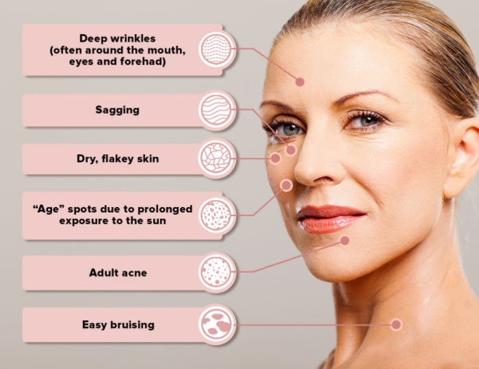

Ageing Gracefully Shouldn’t Be This Hard!
The subtle signs of aging skin can catch many ladies by surprise. Oftentimes, ladies only start to take their skincare routine more seriously after spotting their first wrinkle.
By then the skin damage has already begun… and menopause amplifies the effects.
The decline in estrogen levels can lead to a whole range of skin-related issues such as:
The Science Behind Menopausal Skin Issues - Why Some Ladies Look Older Than They Actually Are
The skin is made up of 3 main layers & the health of each layer impacts the overall look and feel of our skin.
During menopause, the fluctuating estrogen levels causes each layer to deteriorate over time:

Dry Skin, Dark Spots & Fine Lines? Blame The Epidermis
Common Skin Issues Caused: “Age spots” & Dry, flakey skin
Why Does It Happen?
Age spots” are caused by prolonged exposure to UV light from the sun - which may cause Vitamin E (a natural UV skin protector) levels to decrease.
UV light may also increase the free radicals (cell-destroyers) in the skin’s epidermis level. This may lead to dryness and flaking as we age


Low hyaluronic acid levels is another big issue that causes dryness.
Hyaluronic acid is a naturally-occurring substance in the skin that’s known for it’s amazing capacity to hold onto 1000x its weight in moisture.
Simply put, it is what keeps the skin bouncy and supple.
The bad news is that research suggests that hyaluronic acid levels decline over time… causing the skin to look pale and dry as years pass.
Deep Sagging & Wrinkles? It’s Likely Your Dermis...
Common Skin Issues Caused: “Age spots” & Dry, flakey skin
Why Does It Happen?
Wrinkles and sagging skin are a result of 2 factors in the dermis layer:

1. Low collagen levels
If the skin was a mattress, collagen are the springs that are holding it up. The higher the number of springs, the more even the surface of the mattress.
However, as we age, collagen levels drop… which leads to lesser support to hold up the skin.
2. High glycation levels
Glycation is one of the main causes of skin aging.
It occurs when excess sugar we ingest reacts with collagen - and binds to it.
It’s like rust coating the springs (collagen) in the mattress (skin), and over time, the springs get destroyed — leading to uneven support for the skin.
Low collagen and high glycation collectively lead to deep wrinkles and sagging skin as we age.